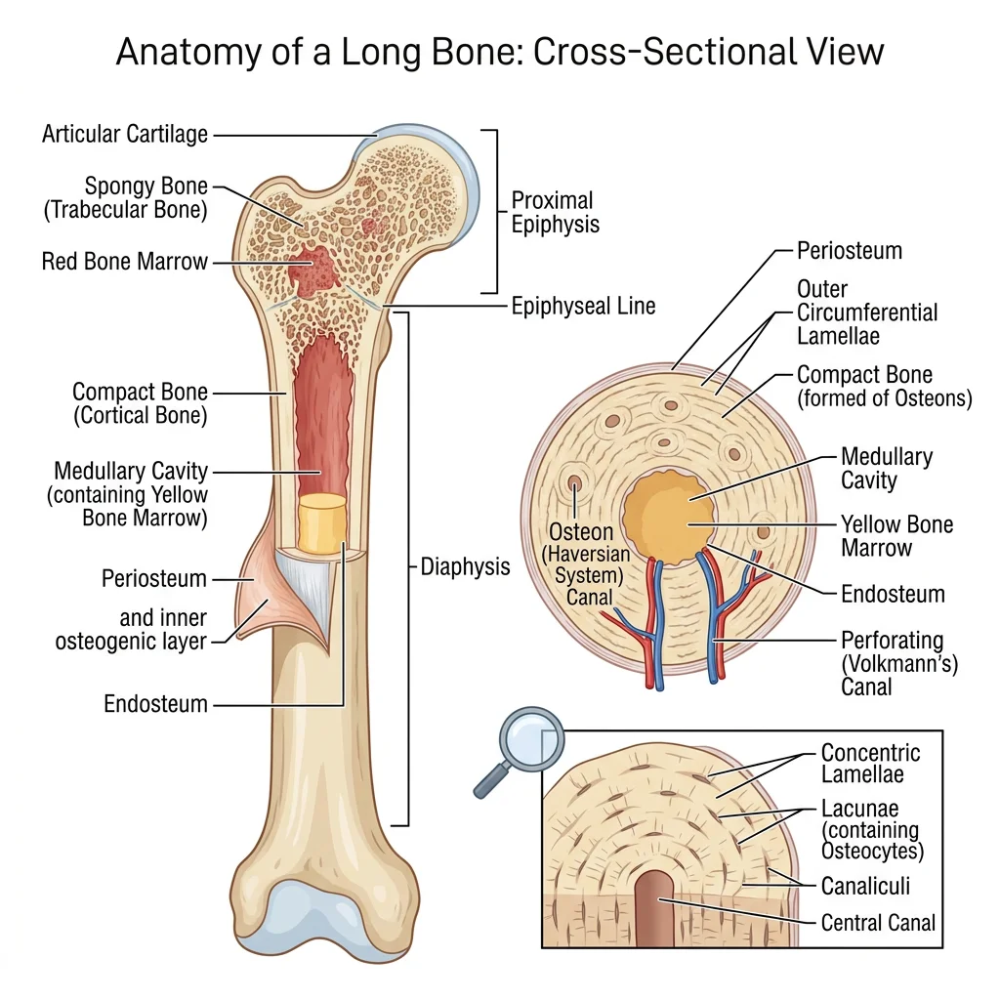
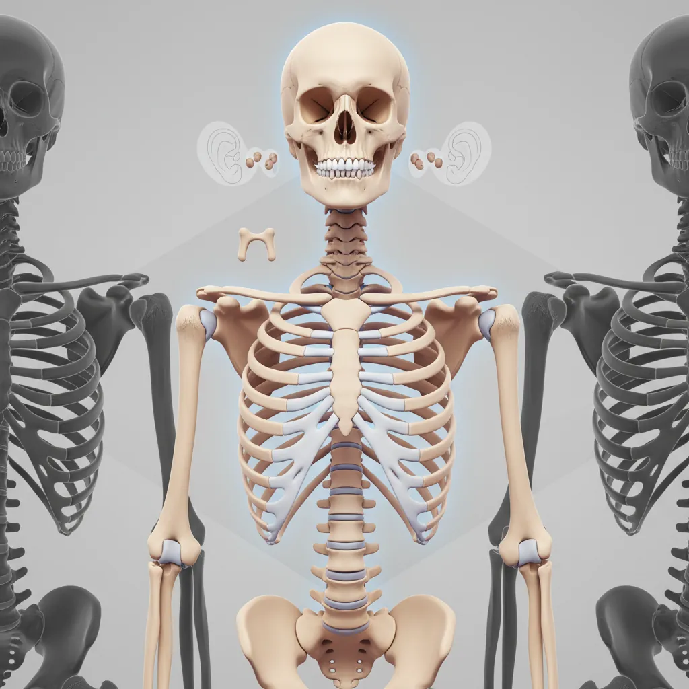
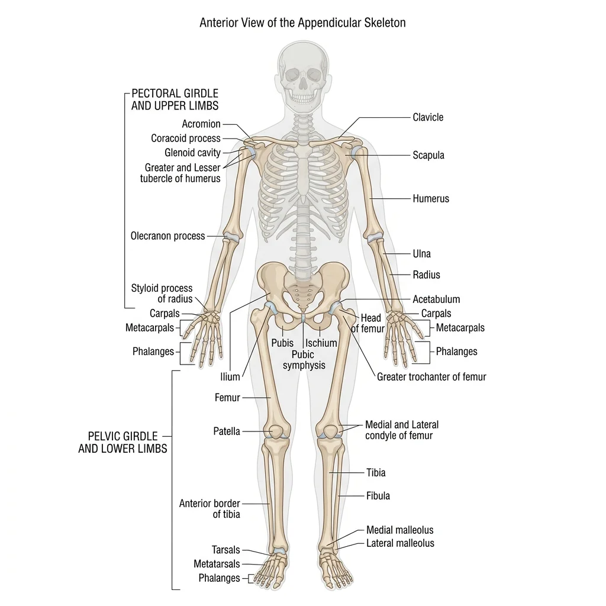
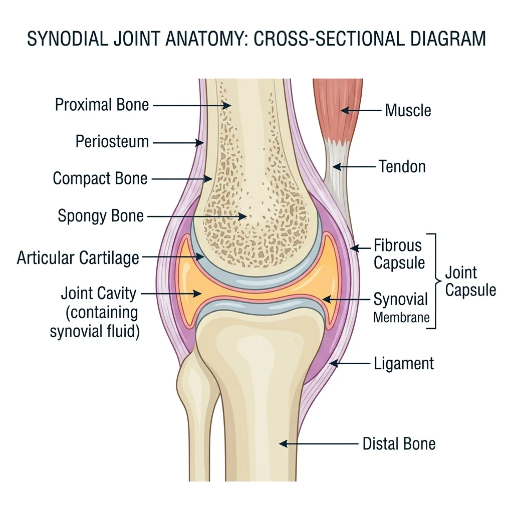
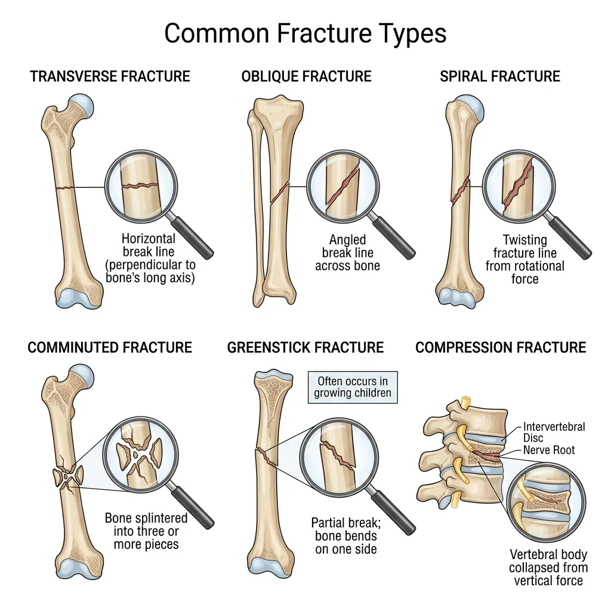

Human Anatomy Mastery
Anatomical Terminology & Body Planes
Directional terms, planes, cavities, tissuesSkeletal System & Joints
Osteology, axial & appendicular, arthrologyMuscular System & Movement
Muscle types, functional groups, biomechanicsCardiovascular & Lymphatic Anatomy
Heart, vessels, lymphatics, clinical linksNervous System & Neuroanatomy
CNS, PNS, autonomic, functional pathwaysVisceral Anatomy — Thorax & Abdomen
Thoracic & abdominal organs, peritoneumHead, Neck & Special Senses
Skull foramina, eye, ear, oral anatomySurface Anatomy & Clinical Imaging
Landmarks, X-ray, CT, MRI, proceduresHistology & Microscopic Anatomy
Cell ultrastructure, tissue & organ histologyEmbryology & Developmental Anatomy
Germ layers, organogenesis, malformationsFunctional & Applied Anatomy
Biomechanics, posture, gait, integrationRegional Dissection Mastery
Upper/lower limb, thorax, abdomen, pelvisOsteology — The Science of Bones
Osteology is the branch of anatomy devoted to the study of bones. The adult human skeleton comprises 206 named bones, each a living, dynamic organ capable of growth, repair, and remodelling. Far from being static scaffolding, bone tissue is constantly renewed — roughly 10 % of the adult skeleton is replaced every year through the coordinated activity of osteoblasts (bone-forming cells), osteoclasts (bone-resorbing cells), and osteocytes (mature sensing cells embedded in the matrix).

Bone Structure — Compact vs Spongy
All bones consist of two architectural forms arranged to optimise strength while minimising weight:
Compact (Cortical) Bone
Compact bone forms the dense outer shell of every bone and constitutes ~80 % of skeletal mass. Its hallmark is the Haversian system (osteon) — concentric rings of calcified matrix (lamellae) surrounding a central Haversian canal that carries blood vessels and nerves. Tiny channels called canaliculi radiate outward, connecting osteocyte lacunae to one another and to the central canal, enabling nutrient exchange and mechanosensory signalling.
- Osteon (Haversian system): Functional unit — 200–300 µm diameter cylinder of concentric lamellae
- Haversian canal: Central channel (50 µm) carrying one or two capillaries + nerve fibres
- Volkmann's canals: Transverse/oblique channels linking adjacent Haversian canals and periosteum
- Lamellae: Layers of collagen fibres oriented in alternating directions — like plywood — resisting multidirectional stress
- Lacunae & canaliculi: Osteocyte chambers and their radiating tunnels forming a communication network
- Cement line: Thin ring of ground substance marking the outer boundary of each osteon
Spongy (Cancellous / Trabecular) Bone
Spongy bone fills the interior of short, flat, and irregular bones and the epiphyses of long bones. It consists of an open lattice of bony struts called trabeculae, oriented along lines of mechanical stress (Wolff's Law). The spaces between trabeculae are filled with red or yellow bone marrow. Despite contributing only ~20 % of skeletal mass, spongy bone provides enormous surface area — roughly ten times that of compact bone — making it the primary site of metabolic calcium exchange and haematopoiesis.
Julius Wolff & Adaptive Bone Remodelling (1892)
German anatomist-surgeon Julius Wolff published Das Gesetz der Transformation der Knochen, proposing that bone remodels in response to the mechanical loads placed upon it. Trabeculae align along principal stress trajectories — a concept later validated by finite-element analysis. This principle underlies modern orthopaedic practices: astronauts lose ~1–2 % bone density per month in microgravity because gravitational loading is absent, while tennis players develop 35 % more cortical bone in their dominant forearm compared with the non-dominant arm.
Gross Anatomy of a Long Bone
A typical long bone (e.g., the femur) illustrates every major feature:
| Region | Description | Clinical Relevance |
|---|---|---|
| Diaphysis | Tubular shaft — thick compact bone surrounding the medullary cavity | Fracture mid-shaft damages nutrient artery → risk of avascular necrosis |
| Epiphysis | Bulbous ends — thin cortical shell over spongy bone; covered by articular cartilage | Salter–Harris fractures in children involve the epiphyseal plate |
| Metaphysis | Flared region between diaphysis and epiphysis | Rich blood supply makes it a common site for haematogenous osteomyelitis in children |
| Periosteum | Dense fibrous + osteogenic membrane covering outer surface (except articular areas) | Contains Sharpey's fibres anchoring tendons/ligaments; essential for fracture healing |
| Endosteum | Thin connective tissue lining the medullary cavity and trabeculae | Active in bone remodelling; contains osteoblast and osteoclast precursors |
| Medullary cavity | Central canal filled with yellow marrow (adults) or red marrow (children) | Intramedullary nailing uses this cavity for fracture fixation |
Ossification & Growth Plates
Bones form through two distinct processes of ossification (osteogenesis), both beginning during the embryonic period and continuing into adulthood:
Intramembranous Ossification
In intramembranous ossification, bone develops directly from mesenchymal connective tissue — no cartilage template is involved. This process forms the flat bones of the skull (frontal, parietal, occipital squama), the mandible, and the clavicle. Mesenchymal cells cluster and differentiate into osteoblasts, which secrete osteoid. Calcification occurs as calcium phosphate crystals (hydroxyapatite) are deposited. The resulting woven bone is later remodelled into mature lamellar bone.
Endochondral Ossification
Most bones form through endochondral ossification, in which a hyaline cartilage model is progressively replaced by bone. The process begins at the primary ossification centre in the diaphysis around weeks 8–12 of foetal life, then extends toward the epiphyses. Secondary ossification centres appear in the epiphyses after birth. Between these centres lies the epiphyseal (growth) plate — a band of hyaline cartilage responsible for longitudinal bone growth.
Zones of the Epiphyseal Plate
The growth plate contains five histological zones, progressing from the epiphysis toward the diaphysis:
| Zone | Activity | Key Feature |
|---|---|---|
| 1. Reserve (Resting) | Anchors plate to epiphysis; stores nutrients | Small, scattered chondrocytes |
| 2. Proliferative | Chondrocytes divide rapidly in longitudinal columns | "Stack of coins" arrangement; driven by growth hormone / IGF-1 |
| 3. Hypertrophic | Chondrocytes enlarge (5–10× volume); secrete VEGF, collagen X | Responsible for most longitudinal growth |
| 4. Calcification | Matrix calcifies; chondrocytes undergo apoptosis | Weakest zone — Salter–Harris fractures occur here |
| 5. Ossification | Osteoblasts deposit bone on calcified cartilage scaffolds | Transition to metaphyseal spongy bone |
Blood Supply & Marrow
Bones have a rich blood supply essential for growth, repair, and haematopoiesis. A long bone receives blood from four sources:
- Nutrient artery: Enters through the nutrient foramen in the diaphysis; largest single supply — provides ~50–70 % of cortical blood flow; runs obliquely through cortex into medullary cavity, where it bifurcates into ascending and descending branches
- Metaphyseal arteries: Enter near the metaphysis from surrounding muscles; critical during growth
- Epiphyseal arteries: Supply the epiphysis (and secondary ossification centres) without crossing the growth plate in children
- Periosteal arteries: Small vessels from the periosteal plexus; supply the outer third of the cortex
Bone Marrow
Bone marrow occupies the medullary cavity and the spaces within spongy bone. Two types exist:
- Red (haematopoietic) marrow: Produces ~200 billion red blood cells, 10 billion white blood cells, and 400 billion platelets per day. In newborns, virtually all marrow is red. By adulthood, red marrow is confined to the axial skeleton (vertebrae, sternum, ribs, pelvis), proximal femur and humerus, and cranial diploe.
- Yellow (fatty) marrow: Consists primarily of adipocytes; replaces red marrow in the long bone shafts during growth. Can reconvert to red marrow during severe anaemia or blood loss as an emergency haematopoietic reserve.
Posterior Iliac Crest Aspiration
The posterior superior iliac spine (PSIS) is the preferred site for bone marrow aspiration and biopsy in adults between ages 18 and 80+. The iliac crest provides safe, superficial access to abundant red marrow while avoiding neurovascular structures. A Jamshidi needle is advanced through the cortex into the medullary cavity. The aspirate is examined for cell morphology (leukaemia, myelodysplastic syndromes), while the core biopsy reveals marrow architecture. In children under age 2, the anteromedial tibia is sometimes used because the iliac crest is still largely cartilaginous.
Axial Skeleton
The axial skeleton consists of 80 bones forming the central axis of the body: the skull (22 bones), hyoid bone (1), auditory ossicles (6), vertebral column (26), and thoracic cage (25 — sternum + 24 ribs). It protects the brain, spinal cord, heart, and lungs while serving as the attachment point for muscles of the head, neck, and trunk.

Skull — Cranial & Facial Bones
The skull comprises 22 bones — 8 cranial bones forming the calvaria (cranial vault) and cranial base, and 14 facial bones forming the framework of the face. Most skull bones are united by immovable fibrous sutures; the only freely mobile skull bone is the mandible, articulating at the temporomandibular joint (TMJ).
Cranial Bones (8)
| Bone | Number | Key Features | Clinical Significance |
|---|---|---|---|
| Frontal | 1 | Forehead, orbital roofs, frontal sinuses, supraorbital foramina | Frontal sinusitis; supraorbital nerve block site |
| Parietal | 2 | Cranial vault roof; sagittal and coronal suture borders | Parietal foramina (emissary veins → infection route) |
| Temporal | 2 | Houses middle/inner ear; zygomatic process, mastoid process, styloid process, petrous part | Mastoiditis; middle meningeal artery groove (epidural haematoma) |
| Occipital | 1 | Foramen magnum, occipital condyles, external occipital protuberance (inion) | Atlanto-occipital dislocation (often fatal); suboccipital triangle |
| Sphenoid | 1 | "Bat-shaped" keystone; sella turcica (pituitary fossa), greater/lesser wings, pterygoid processes | Trans-sphenoidal surgery for pituitary tumours; cavernous sinus |
| Ethmoid | 1 | Cribriform plate, crista galli, perpendicular plate, superior/middle conchae, ethmoidal air cells | CSF rhinorrhoea from cribriform plate fracture; ethmoidal sinusitis |
Facial Bones (14)
The 14 facial bones form the orbits, nasal cavity, oral cavity, and jaw:
| Bone | Number | Key Features |
|---|---|---|
| Maxilla | 2 | Upper jaw, hard palate (anterior ¾), maxillary sinus, infraorbital foramen |
| Mandible | 1 | Lower jaw — body, ramus, condylar process (TMJ), coronoid process, mental foramen |
| Zygomatic | 2 | Cheekbone prominence; forms lateral orbital wall with frontal process |
| Nasal | 2 | Bridge of nose; articulates with frontal bone superiorly |
| Lacrimal | 2 | Smallest facial bone — medial orbit; contains lacrimal groove (nasolacrimal duct) |
| Palatine | 2 | L-shaped; forms posterior ¼ of hard palate + part of nasal cavity floor |
| Inferior nasal concha | 2 | Independent bone (unlike superior/middle conchae from ethmoid); warms/humidifies air |
| Vomer | 1 | Inferior part of nasal septum (with perpendicular plate of ethmoid superiorly) |
Major Skull Sutures & Fontanelles
Sutures are fibrous joints unique to the skull where flat bones interdigitate and eventually fuse (synostosis). The four major sutures are:
- Coronal suture: Frontal bone meets the two parietal bones (forms the anterior fontanelle / bregma at their junction)
- Sagittal suture: Between the two parietal bones along the midline
- Lambdoid suture: Parietal bones meet the occipital bone (forms the posterior fontanelle / lambda)
- Squamous suture: Temporal bone meets parietal bone on each side
The anterior fontanelle (diamond-shaped, ~2.5 × 4 cm at birth) closes by age 18–24 months and is clinically assessed for intracranial pressure (bulging = raised ICP; sunken = dehydration). The posterior fontanelle (triangular, smaller) closes by 2–3 months.
Vertebral Column & Curvatures
The vertebral column consists of 33 vertebrae during development, consolidating to 26 bones in the adult: 7 cervical, 12 thoracic, 5 lumbar, 1 sacrum (5 fused), and 1 coccyx (3–5 fused). It houses and protects the spinal cord, supports the head, and transmits body weight to the lower limbs.
Typical Vertebra — General Features
Most vertebrae share a common plan: a body (weight-bearing, anteriorly), a vertebral arch (pedicles + laminae enclosing the vertebral foramen), 7 processes (1 spinous, 2 transverse, 4 articular / zygapophyseal), and the vertebral foramen (collectively forming the vertebral canal for the spinal cord).
Regional Vertebral Characteristics
| Region | Count | Body Shape | Foramen | Spinous Process | Special Features |
|---|---|---|---|---|---|
| Cervical (C1–C7) | 7 | Small, oval | Triangular (large) | Bifid (C3–C6) | Transverse foramina (vertebral arteries C6→C1); Atlas (C1) — no body; Axis (C2) — dens/odontoid |
| Thoracic (T1–T12) | 12 | Heart-shaped | Circular | Long, sloping inferiorly | Costal facets (superior, inferior, transverse) for rib articulation |
| Lumbar (L1–L5) | 5 | Large, kidney-shaped | Triangular | Short, broad, horizontal | Largest bodies; no transverse foramina or costal facets; lumbar puncture at L3–L4 or L4–L5 |
| Sacrum | 1 (5 fused) | Triangular mass | Sacral canal | Median sacral crest | Sacral hiatus (caudal anaesthesia), sacral foramina, sacroiliac joints |
| Coccyx | 1 (3–5 fused) | Vestigial | None | None | Attachment for pelvic floor muscles; coccydynia from falls |
Spinal Curvatures
The vertebral column exhibits four physiological curves in the sagittal plane that develop at different stages:
- Cervical lordosis (secondary): Develops ~3–4 months when the infant begins to hold its head up
- Thoracic kyphosis (primary): Present at birth — the original foetal curvature; concave anteriorly
- Lumbar lordosis (secondary): Develops ~12–18 months when the child begins to walk
- Sacral kyphosis (primary): Fixed curvature of the fused sacrum
Ribs & Sternum — The Thoracic Cage
The thoracic cage (rib cage) protects the heart, lungs, and great vessels while enabling the mechanical expansion and contraction of breathing. It consists of 12 pairs of ribs, the sternum, and the 12 thoracic vertebrae.
Rib Classification
| Type | Ribs | Anterior Attachment | Notes |
|---|---|---|---|
| True (vertebrosternal) | 1–7 | Each attaches directly to sternum via its own costal cartilage | Rib 1 is short, flat, and most curved |
| False (vertebrochondral) | 8–10 | Costal cartilage joins the cartilage of the rib above | Rib 10 may be floating in some individuals |
| Floating (vertebral) | 11–12 | No anterior attachment — free-ending | Short, no costal groove; protect kidneys posteriorly |
Sternum
The sternum ("breastbone") consists of three parts: the manubrium (articulates with clavicles and ribs 1–2), the body (articulates with ribs 2–7), and the xiphoid process (ossifies by age ~40; attachment for the diaphragm and rectus abdominis). The junction of the manubrium and body forms the sternal angle (angle of Louis) — a palpable landmark at the level of the 2nd costal cartilage, T4–T5 disc, bifurcation of the trachea, and the aortic arch.
Appendicular Skeleton
The appendicular skeleton comprises 126 bones organised into the upper limbs and their girdle (pectoral/shoulder) and the lower limbs and their girdle (pelvic). While the axial skeleton emphasises protection, the appendicular skeleton is optimised for mobility and manipulation.

Shoulder Girdle & Upper Limb
Pectoral (Shoulder) Girdle
The pectoral girdle connects each upper limb to the axial skeleton and consists of two bones:
- Clavicle: S-shaped strut; most frequently fractured bone in the body (usually at the junction of the middle and lateral thirds). Only bony link between the upper limb and the axial skeleton via the sternoclavicular joint.
- Scapula: Triangular flat bone on the posterior thorax (T2–T7); features include the spine, acromion, coracoid process, glenoid cavity (shallow — allowing high mobility but low stability), supraspinous and infraspinous fossae, and subscapular fossa.
Bones of the Upper Limb
| Region | Bone(s) | Key Features | Clinical Notes |
|---|---|---|---|
| Arm | Humerus | Head (glenohumeral joint), greater/lesser tubercles, surgical neck, deltoid tuberosity, radial groove, capitulum, trochlea, olecranon fossa | Surgical neck fracture → axillary nerve damage; radial groove fracture → wrist drop |
| Forearm | Radius (lateral), Ulna (medial) | Radius: radial head, radial tuberosity, styloid process. Ulna: olecranon, coronoid process, trochlear notch, styloid process | Colles' fracture (distal radius) — "dinner fork" deformity; Monteggia/Galeazzi fracture-dislocations |
| Wrist | 8 carpal bones (2 rows) | Proximal: scaphoid, lunate, triquetrum, pisiform. Distal: trapezium, trapezoid, capitate, hamate | Scaphoid fracture — most common carpal fracture; risk of avascular necrosis due to retrograde blood supply |
| Hand | 5 metacarpals + 14 phalanges | Thumb: 2 phalanges (proximal, distal). Fingers 2–5: 3 each (proximal, middle, distal) | Boxer's fracture (5th metacarpal neck); Bennett's fracture (1st metacarpal base) |
Pelvic Girdle & Lower Limb
Pelvic Girdle
The pelvic girdle is formed by two hip bones (os coxae), each composed of three fused bones — the ilium (superior), ischium (posteroinferior), and pubis (anteroinferior) — which meet at the acetabulum, the deep socket for the femoral head. Posteriorly, the hip bones articulate with the sacrum at the sacroiliac joints; anteriorly, they meet at the pubic symphysis.
Male vs Female Pelvis — Obstetric Significance
The female pelvis is adapted for childbirth with several key differences: a wider, more circular pelvic inlet (gynecoid shape), a wider subpubic angle (>80° vs ~60° in males), a shorter and wider sacrum that is less curved, and more everted ischial tuberosities. The pelvic outlet is larger, and the acetabula face more anteriorly. These differences are used in forensic anthropology for sex determination from skeletal remains — the pelvis alone provides ~95 % accuracy in sex identification.
Bones of the Lower Limb
| Region | Bone(s) | Key Features | Clinical Notes |
|---|---|---|---|
| Thigh | Femur | Longest, strongest bone; head (fovea for ligamentum teres), neck, greater/lesser trochanters, linea aspera, condyles | Femoral neck fracture in elderly (osteoporosis); avascular necrosis of head (medial circumflex femoral artery) |
| Knee | Patella | Largest sesamoid bone; embedded in quadriceps tendon | Patellar fracture; bipartite patella (developmental variant) |
| Leg | Tibia (medial), Fibula (lateral) | Tibia: tibial tuberosity, medial malleolus, weight-bearing. Fibula: head, lateral malleolus, non-weight-bearing | Tibial shaft fracture (exposed subcutaneously); fibular neck fracture → common fibular nerve palsy (foot drop) |
| Ankle/Foot | 7 tarsals + 5 metatarsals + 14 phalanges | Tarsals: talus, calcaneus, navicular, cuboid, 3 cuneiforms. Great toe: 2 phalanges; toes 2–5: 3 each | Calcaneal fracture from height falls; Jones fracture (5th metatarsal base); plantar fasciitis |
Arthrology — The Study of Joints
Arthrology is the study of joints (articulations) — the points where two or more bones meet. Joints are classified by structure (the type of connective tissue binding bones) and by function (the degree of movement permitted). The structural categories are fibrous, cartilaginous, and synovial; the functional categories are synarthrosis (immovable), amphiarthrosis (slightly movable), and diarthrosis (freely movable).

Fibrous Joints
In fibrous joints, bones are joined by dense regular connective tissue (collagen fibres). No joint cavity exists. There are three subtypes:
| Subtype | Description | Movement | Examples |
|---|---|---|---|
| Sutures | Short fibres between interlocking bone edges (skull only) | Synarthrosis (immovable) | Coronal, sagittal, lambdoid, squamous sutures |
| Syndesmoses | Longer fibres forming an interosseous membrane or ligament | Amphiarthrosis (slight) | Distal tibiofibular joint, interosseous membrane of forearm |
| Gomphoses | Peg-in-socket; periodontal ligament anchors tooth root in alveolar bone | Synarthrosis (immovable) | Teeth in mandible/maxilla |
Cartilaginous Joints
In cartilaginous joints, bones are united by cartilage — either hyaline or fibrocartilage. No joint cavity is present.
| Subtype | Cartilage Type | Movement | Examples |
|---|---|---|---|
| Synchondroses | Hyaline cartilage | Synarthrosis (immovable) | Epiphyseal plates (in growing bones), 1st costochondral joint, spheno-occipital synchondrosis |
| Symphyses | Fibrocartilage (with thin hyaline layer on bone surfaces) | Amphiarthrosis (slightly movable) | Pubic symphysis, intervertebral discs (nucleus pulposus + anulus fibrosus) |
Synovial Joints — Structure & Types
Synovial joints are the most numerous and the most mobile joints in the body. All are diarthroses (freely movable). They share a set of defining features:
- Articular (hyaline) cartilage: Covers the articulating bone surfaces — smooth, avascular, resilient
- Joint (articular) cavity: Space containing a small volume of synovial fluid
- Synovial fluid: Viscous, clear fluid produced by the synovial membrane; provides nutrition to cartilage and lubrication (viscosity from hyaluronic acid)
- Articular capsule: Two layers — outer fibrous capsule (continuous with periosteum) and inner synovial membrane (produces synovial fluid)
- Ligaments: Intrinsic (thickenings of the capsule) or extrinsic bands reinforcing the joint
- Richly innervated: Hilton's Law — nerves supplying a joint also supply the muscles moving it and the skin over those muscles
Accessory structures found in some synovial joints include: articular discs (menisci) — fibrocartilage pads that improve congruence (e.g., knee menisci, TMJ disc); bursae — fluid-filled sacs reducing friction between tendons and bones; and tendon sheaths — tube-like bursae wrapping long tendons (e.g., flexor tendon sheaths of the hand).
Six Types of Synovial Joints
| Type | Shape | Axes | Movements | Example |
|---|---|---|---|---|
| Plane (Gliding) | Flat surfaces | Multiaxial (limited) | Side-to-side sliding | Acromioclavicular, intercarpal, intertarsal joints |
| Hinge (Ginglymus) | Convex fits concave | Uniaxial | Flexion/extension | Elbow (humeroulnar), knee (modified hinge), ankle (talocrural) |
| Pivot (Trochoid) | Rounded process in ring | Uniaxial | Rotation | Atlantoaxial (C1–C2, head rotation), proximal radioulnar (pronation/supination) |
| Condyloid (Ellipsoid) | Oval convex in elliptical concavity | Biaxial | Flexion/extension, abduction/adduction, circumduction | Radiocarpal (wrist), metacarpophalangeal (knuckles), atlanto-occipital |
| Saddle (Sellar) | Each surface is concave and convex | Biaxial | Same as condyloid + some axial rotation | 1st carpometacarpal (thumb — trapezium + 1st metacarpal), sternoclavicular |
| Ball-and-Socket (Spheroidal) | Sphere in cup | Multiaxial | Flexion/extension, abduction/adduction, rotation, circumduction | Shoulder (glenohumeral), hip (acetabulofemoral) |
Sir John Charnley & The Total Hip Replacement (1962)
British orthopaedic surgeon Sir John Charnley revolutionised medicine with the "low-friction arthroplasty" at Wrightington Hospital, Lancashire. He combined a small-diameter stainless-steel femoral head with a high-density polyethylene acetabular cup, fixed with polymethylmethacrylate (PMMA) bone cement. This design dramatically reduced friction and wear compared with earlier attempts. The Charnley total hip replacement became one of the most successful surgical procedures in history — over 1 million hip replacements are now performed annually worldwide. Modern implants have evolved to ceramic-on-ceramic and cobalt-chromium-on-polyethylene bearings, but Charnley's biomechanical principles remain the foundation.
Joint Movements — Terminology
Precise terminology describes every possible joint movement. All movements occur in specific anatomical planes relative to axes of rotation:
| Movement | Plane | Description | Example |
|---|---|---|---|
| Flexion | Sagittal | Decreases angle between bones | Bending the elbow; hip flexion (lifting the thigh) |
| Extension | Sagittal | Increases angle between bones (return from flexion) | Straightening the knee |
| Hyperextension | Sagittal | Extension beyond anatomical position | Tilting the head backward |
| Abduction | Frontal | Movement away from midline | Raising the arm laterally (deltoid) |
| Adduction | Frontal | Movement toward midline | Bringing arm back to the side |
| Rotation | Transverse | Turning around the longitudinal axis | Medial/lateral rotation of the humerus |
| Circumduction | Multiple | Cone-shaped movement combining flexion, abduction, extension, adduction | Drawing a circle with the outstretched arm |
| Pronation | Transverse | Forearm rotation — palm faces posterior/downward | Turning a doorknob counterclockwise (left hand) |
| Supination | Transverse | Forearm rotation — palm faces anterior/upward | Holding a bowl of soup ("supination = soup") |
| Dorsiflexion | Sagittal | Foot: toes point upward toward the shin | Walking heel-strike phase |
| Plantarflexion | Sagittal | Foot: toes point downward (standing on tiptoe) | Pushing off during walking/running |
| Inversion | Frontal | Sole of foot turns medially (inward) | Most common ankle sprain mechanism |
| Eversion | Frontal | Sole of foot turns laterally (outward) | Less common ankle sprain |
| Protraction | Transverse | Movement anteriorly in horizontal plane | Jutting the jaw forward; scapular protraction (punching) |
| Retraction | Transverse | Movement posteriorly in horizontal plane | Pulling the shoulders back (military posture) |
| Elevation | Frontal | Movement superiorly | Shrugging the shoulders; closing the mouth |
| Depression | Frontal | Movement inferiorly | Opening the mouth; dropping the shoulders |
| Opposition | Multiple | Thumb touches fingertip pads | Precision grip — unique to primates (1st CMC saddle joint) |
Clinical Correlations
Understanding skeletal and joint anatomy is essential for diagnosing and managing the most common musculoskeletal conditions encountered in clinical practice.

Fracture Classifications & Healing
A fracture is any break in the continuity of bone. Fractures are classified by pattern, displacement, and relationship to the skin:
| Classification | Type | Description |
|---|---|---|
| By Skin Integrity | Closed (simple) | Skin intact; bone does not protrude |
| Open (compound) | Bone pierces skin — high infection risk | |
| By Pattern | Transverse | Straight line perpendicular to long axis — direct blow |
| Oblique | Diagonal line — angular force | |
| Spiral | Twisting line around bone — rotational force (suspicious for child abuse in <3 yr olds) | |
| Comminuted | Bone shattered into ≥3 fragments — high-energy trauma | |
| Greenstick | Incomplete — one cortex broken, other bent — children (flexible bones) | |
| Compression | Vertebral body crushed — osteoporosis, axial loading | |
| Special Types | Pathological | Through weakened bone (tumour, osteoporosis, Paget's) |
| Stress (fatigue) | Overuse microtrauma — runners, military recruits (2nd metatarsal "march fracture") |
Fracture Healing — Four Phases
- Haematoma formation (0–5 days): Blood from broken periosteal/endosteal vessels clots at the fracture site, creating an inflammatory environment. Macrophages debride necrotic tissue.
- Soft callus / Fibrocartilaginous callus (5–11 days): Fibroblasts and chondroblasts bridge the gap with a rubbery splint of collagen and cartilage. New capillaries provide blood supply (angiogenesis).
- Hard callus / Bony callus (11 days – ~4 months): Osteoblasts replace the soft callus with woven bone via endochondral ossification. The callus is visible on X-ray.
- Remodelling (months – years): Osteoclasts and osteoblasts reshape the callus from woven to lamellar bone, restoring original shape and re-establishing the medullary cavity. Guided by Wolff's Law, bone strengthens along lines of stress.
Arthritis — Osteoarthritis vs Rheumatoid
Arthritis refers to inflammation of joints. The two most prevalent forms have fundamentally different aetiologies:
| Feature | Osteoarthritis (OA) | Rheumatoid Arthritis (RA) |
|---|---|---|
| Nature | "Wear & tear" — degenerative | Autoimmune — inflammatory |
| Age of Onset | >50 years typically | 30–50 years; can affect children (JRA) |
| Joint Pattern | Asymmetric; weight-bearing joints (hip, knee); DIP joints of hand | Symmetric; small joints first (MCP, PIP, wrists); spares DIP |
| Stiffness | Morning stiffness <30 min; worsens with activity | Morning stiffness >60 min; improves with activity |
| Pathology | Cartilage erosion → subchondral sclerosis, osteophytes, cysts | Synovial hypertrophy (pannus) → cartilage/bone erosion |
| X-ray Findings | Joint space narrowing, sclerosis, osteophytes, subchondral cysts | Periarticular osteopenia, marginal erosions, subluxation |
| Nodes | Heberden's (DIP) and Bouchard's (PIP) nodes | Rheumatoid nodules (subcutaneous, extensor surfaces) |
| Lab Findings | Normal ESR/CRP; RF/anti-CCP negative | Elevated ESR/CRP; RF+ (~70%), anti-CCP+ (~95% specific) |
Intervertebral Disc Herniation
The intervertebral disc is a symphysis joint between vertebral bodies consisting of a tough outer anulus fibrosus (concentric rings of fibrocartilage) and a gel-like inner nucleus pulposus (remnant of the embryonic notochord). Disc herniation occurs when the nucleus pulposus protrudes through a tear in the anulus fibrosus, most commonly in the posterolateral direction (where the anulus is thinnest, and the posterior longitudinal ligament covers only the midline).
Common Joint Dislocations
A dislocation (luxation) is complete loss of articular congruence between joint surfaces. A subluxation is partial loss of contact. The most commonly dislocated joints reflect the trade-off between mobility and stability:
| Joint | Direction | Mechanism | Associated Injuries |
|---|---|---|---|
| Shoulder (glenohumeral) | Anterior (95%) | Forced abduction + external rotation (e.g., throwing, falling on outstretched hand) | Bankart lesion (labral tear), Hill-Sachs lesion (humeral head defect), axillary nerve injury |
| Hip | Posterior (90%) | Dashboard injury — force along femoral shaft with hip flexed (car accident) | Sciatic nerve injury, avascular necrosis of femoral head (if not reduced within 6 hours) |
| Elbow | Posterior | Fall on outstretched hand with elbow slightly flexed | Ulnar nerve injury, coronoid process fracture, "terrible triad" (dislocation + coronoid + radial head fracture) |
| Finger (IP joints) | Dorsal | Hyperextension injury (sports — basketball, football) | Volar plate injury, collateral ligament sprain |
Anterior Shoulder Dislocation — Diagnosis & Reduction
A 22-year-old university rugby player presents to the emergency department after a tackle forced his right arm into abduction and external rotation. He holds his arm slightly abducted and externally rotated. Examination reveals a loss of the normal rounded shoulder contour with a palpable "sulcus" beneath the acromion (vacant glenoid). Sensation over the lateral deltoid (regimental badge area) must be tested for axillary nerve integrity. After X-ray confirms anterior dislocation and excludes fractures, the Cunningham technique or external rotation method is used for reduction. Post-reduction X-ray confirms relocation, and the arm is immobilised in a sling. Recurrence rate is ~90 % in patients under age 20, often necessitating Bankart repair (arthroscopic labral reattachment).
Practice & Tools
Applied Code Example — Bone Density & Fracture Risk
This Python script models bone mineral density (BMD) measurement using T-scores and classifies fracture risk according to WHO criteria:
import numpy as np
# WHO Classification of Bone Mineral Density (T-scores)
# T-score = (patient BMD - young-adult mean BMD) / young-adult SD
# Normal: T >= -1.0
# Osteopenia: -2.5 < T < -1.0
# Osteoporosis: T <= -2.5
def classify_bmd(t_score):
"""Classify bone mineral density by WHO T-score criteria."""
if t_score >= -1.0:
return "Normal"
elif t_score > -2.5:
return "Osteopenia"
else:
return "Osteoporosis"
def calculate_frax_simplified(age, t_score, prior_fracture=False,
smoking=False, glucocorticoids=False):
"""Simplified 10-year hip fracture probability estimate (%).
Based on simplified FRAX model - for educational purposes only."""
# Base risk increases exponentially with age
base_risk = 0.1 * np.exp(0.06 * (age - 50))
# T-score adjustment: each SD below -1.0 roughly doubles risk
if t_score < -1.0:
bmd_factor = 2.0 ** abs(t_score + 1.0)
else:
bmd_factor = 1.0
# Clinical risk factor multipliers
risk = base_risk * bmd_factor
if prior_fracture:
risk *= 2.0
if smoking:
risk *= 1.3
if glucocorticoids:
risk *= 1.5
return min(risk, 50.0) # Cap at 50%
# Simulate patient cohort
np.random.seed(42)
n_patients = 8
ages = np.random.randint(55, 85, n_patients)
t_scores = np.round(np.random.uniform(-3.5, 1.0, n_patients), 1)
print("=" * 70)
print("BONE DENSITY ASSESSMENT REPORT")
print("=" * 70)
print(f"{'Patient':>9} {'Age':>5} {'T-Score':>9} {'Classification':>16} {'10yr Hip Fx %':>14}")
print("-" * 70)
for i in range(n_patients):
classification = classify_bmd(t_scores[i])
risk = calculate_frax_simplified(ages[i], t_scores[i])
print(f"{'Pt-' + str(i+1):>9} {ages[i]:>5} {t_scores[i]:>9.1f} {classification:>16} {risk:>13.1f}%")
print("-" * 70)
print("\nWHO Criteria: Normal (T >= -1.0) | Osteopenia (-2.5 < T < -1.0)")
print(" Osteoporosis (T <= -2.5)")
print("\nNote: 10-year fracture risk is a simplified educational estimate.")
print(" Clinical FRAX uses additional factors (BMI, parental history, etc.)")
Bone Inventory Tool
Use this tool to create a detailed inventory of individual bones, recording their landmarks, articulations, blood supply, and clinical significance. Download as Word, Excel, or PDF.
Bone Inventory Card
Document bone anatomy systematically. Download as Word, Excel, or PDF for study reference.
Conclusion & Next Steps
The skeletal system is far more than a passive framework — it is a dynamic, living system of 206 bones that constantly remodels in response to mechanical demand, stores critical mineral reserves, and manufactures the cellular components of blood. From the intricate interdigitations of cranial sutures to the frictionless articulations of synovial joints, every structural detail reflects an evolutionary solution to the competing demands of protection, support, and movement.
The arthrology of joints completes the picture: fibrous joints sacrifice mobility for stability (skull sutures), cartilaginous joints provide shock absorption and slight movement (intervertebral discs), and synovial joints enable the remarkable range of human motion — from the gross power of the hip joint to the fine precision of the thumb's saddle joint. Understanding fracture patterns, joint pathology, and the principles of bone healing forms the clinical foundation that connects anatomy to orthopaedic, emergency, and rehabilitative medicine.
In the next article, we shift from the passive skeleton to the active engine of movement — the muscular system — exploring how muscles attach to these bony levers, generate force through sarcomere contraction, and coordinate complex movements through functional groups.